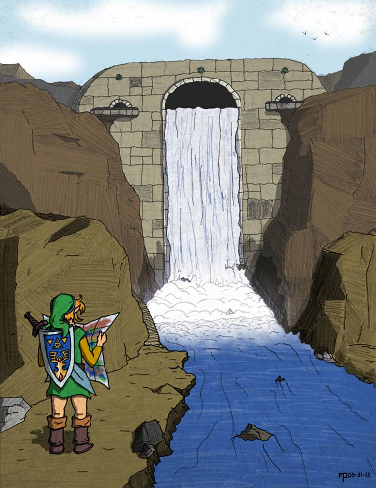
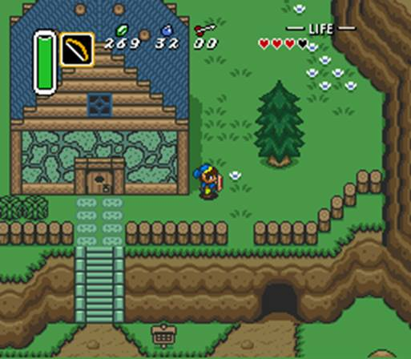
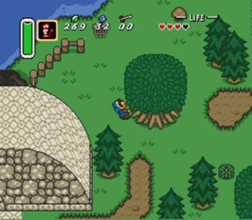
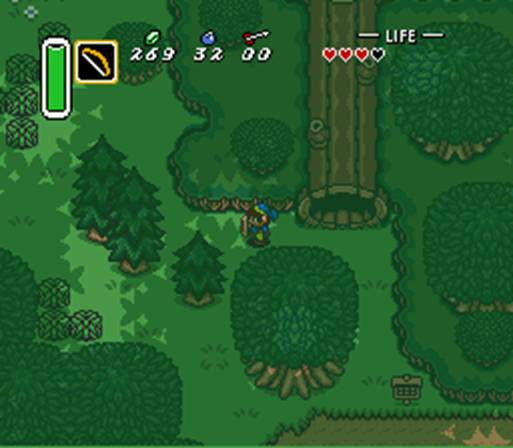
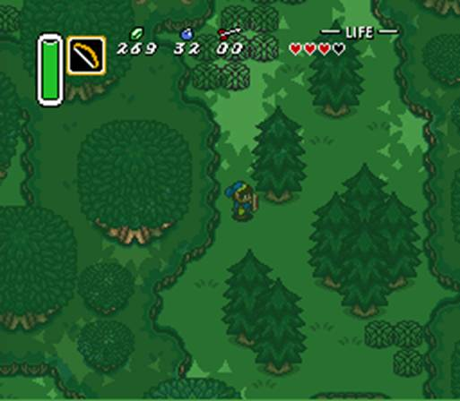
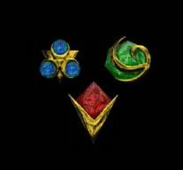
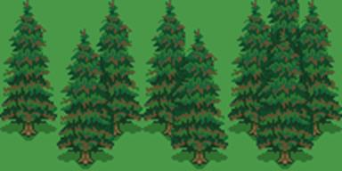
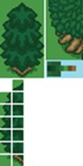
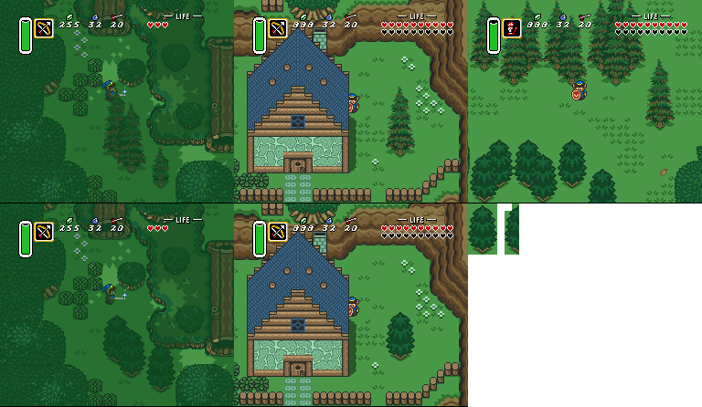
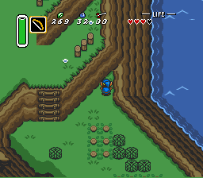

|
Zelda3C Diary
July 18, 2017 Web hosting for this
site, which had been provided free for around 11 years or so, suddenly
vanished without warning. I wouldn’t
have known if not for those of you who emailed me a heads-up. I have found alternate free hosting,
trekked through the mysterious forces of DNS management, and restored the
site. This is by far the
longest I’ve gone without making any progress. Even my wife was asking today,
“Are you ever going to work on that again?” I assured her that I am, and I assure
you as well, though I can’t blame you for doubting. Between tower revamping
struggles, overworld event stubbornness, career changes and time with kids, I
eventually found myself not even thinking about my project. However, while scrolling through my
various web pages and seeing screenshot reminders of all I’ve already
done, I’m reminded that I’ve accomplished great things that
definitely should not be in vain. Of course, if I’m
being honest here, I’ve also been swept up in such things as Breath of
the Wild (which counts as family time) and it’s a lot easier to have
fun than to work (yeah, it’s work) on this project. But the project is also a lot of fun
when I’m not struggling to make key elements work correctly. I need to get past the off-putting
difficult structuring and back to truly enjoyable things like overworld and
puzzle design. I had reached out to some
of the old team with regards to web hosting. (Not so much on the project itself
– I won’t ask for collaboration without first being active
myself.) In one reply, Mike sent
me a drawing of Truce Dam he sketched a few years back. It’s not a project update, but
it is inspiring!  This makes the world I’m
constructing seem so much more real!
I could definitely use this in the game’s PDF instruction
manual. Hopefully, like Link,
I’ll find my way before too much longer. Follow
the project on Twitter! July 5, 2014 I’ve been working on
the project again lately, off and on, without actually posting progress. My attention is completely focused on Recently, a fan
discovered that I created a Twitter account several years ago and forgot
about it. He has convinced me to
start posting frequent, random thoughts instead of just ramping up for a
diary entry that takes me over an hour to compose & edit. I’ll still write these entries,
of course, when I have a lot to say.
What do you think? If I
get lots of followers, I’ll be more encouraged to post actively! ;) Follow
the project on Twitter! November 17, 2013 Here’s a really
quick update on the latest tile work.
A week ago, I was working on Having reached this
point, I also determined many of the new global tiles that will allow certain
outdoor objects to appear anywhere in the game. I’ll just paste the October 22nd
list here and comment beside each entry. -
Invisible water-wall, to keep Link from swimming too far into the ocean
– confirmed! -
Dungeon window, for reuse outside multiple above-ground dungeons –
confirmed! -
Wooden bridges – already possible with non-global graphics. -
Making the large mushroom global, thus freeing seven town tiles –
confirmed, and now hookshot-ready! -
Rocks that can’t be lifted and aren’t symmetrical –
confirmed! -
Bushes that can’t be cut nor lifted and
aren’t symmetrical – thought of later, and confirmed! -
Plaques with messages on them, for when sign posts aren’t formal
enough – just one tile; confirmed! -
A grassy edge to the dam’s pavement – still
not sure, as it will take either two or four more tiles. -
Pit edges normally seen indoors (jagged style)
– thought of later, and confirmed! -
Some surprises I won’t list here. ;) – confirmed, too! Of course,
‘confirmed’ means I have tiles tentatively available for these
ideas, and I believe I’ll actually use them as such. But, things can change, depending on
greater needs that may arise later. November 16, 2013 I must tell the
world: My seven year-old son has
not only escorted Zelda to Sanctuary, but also retrieved the Pendant of
Courage from November 3, 2013 Well-come… to the
latest exciting episode of Quest Impossible! In this show, we follow the twists,
turns, and exploits of Calatia development, from start to a very long-awaited
finish! This time, we have
super-graphics-experts Josh and DarkPrince909 on stage, working night and
day, and often on Zelda3C too, to bring all their talent to physical
form! Quickly! Show us what we’ve won! That’s right! Meet the lovely new pine trees that
pop up throughout the monarchy!  First up, this is the
official unveiling of the pointy pine tree, not to be confused with the
mellow pine tree shown in a previous episode, the latter of which will be
used in what was formerly known as, “The Dark World.” Ooooh! Makes you want to hang sparkling
decorations all over it, right?
Note also the house bricks, which still need improving, but turned out
to at least look better than the screenshot from two episodes ago.  Next we have a few more
pine trees, including two that overlap each other! The overlapping tiles were drawn by
yours truly, showing once again that I’m still in the graphics
fray! But what’s this? Link is trying to move a leafy tree to
the dam so he can climb it and ascend the dam? No, no, folks, I assure you that
can’t possibly happen.
Link, why don’t you try burning the tree with that candle, like
you did in days of yore? Just
kidding, that can’t happen either.
Or can it..?  Suddenly we’re
whisked across the way to  Here we are again, deep
in the forest, where not two, but four pine trees overlap at
once! As you can see, Link
can’t take his eyes off of them!
Truly, any number of pine trees can overlap; entire walls of them may
exist elsewhere in Calatia! And that, friends and
fellow citizens of Calatia, is the end of the latest enthralling
installment! Do feel free to
write, if only to tell me never to use my game show ‘voice’
online again! Next time on Quest
Impossible, October 22, 2013 Only one month left until
A Link Between Worlds! I’m
so excited!! I realized that my new
pine tree screenshots were going to take a little longer, so I should at
least post a quick entry in the meantime. So, here’s a promise that you
will see updated trees in their natural environments very soon. :) There are actually two
versions of the pine tree, one from each artist. The tree I already posted? An improved version will be the
“Altered Future pine tree.”
(This is the first piece of information ever released about this
game’s Altered Future.) The
“Peaceful Past” tree has a pointier style, as opposed to sagging. Over the weekend, I drew
the “overlap tiles” for both trees that allow them to grow close
together. I also drew a mini
version of each tree, as I had done before. Now that the number of required tiles
is determined, I’m thrilled to say that I’m only using 21 of them
instead of 56! This leaves 35
tiles free to use anywhere in the overworld. Here are some new tile
usage ideas: -
Invisible water-wall, to keep Link from swimming too far into the ocean -
Dungeon window, for reuse outside multiple above-ground dungeons -
Wooden bridges -
Making the large mushroom global, thus freeing a few town tiles -
Rocks that can’t be lifted and aren’t symmetrical -
Plaques with messages on them, for when sign posts aren’t formal
enough -
A grassy edge to the dam’s pavement -
Some surprises I won’t list here. ;) Asking for tree graphics
from the artists caused a swell of activity from both of them; not only did
they submit really good trees, but they have unleashed the full menagerie of
monsters for graphics considerations.
We’ve had a lot of emails back and forth about how enemy
appearances will change, and how to manage sprite palettes in various parts
of the world. It’s been
exciting and we’ve learned a few new things about the game. From here, I’m
going to load up that tile set with alternate pine tiles, and some of the
tiles listed above, and a tile I need for October 4, 2013 What! I haven’t updated since the end
of last month? What is wrong with me? So I was on Zelda tropes
recently (it’s so huge, I couldn’t begin to read it all!) when I
found myself reading about timeline theory again. Until recently, I’ve always held
stubbornly to the belief that somehow, all Zelda games exist on a single
timeline, and that nothing so epic as Zelda could fracture itself by paradox
into multiple histories, or worse, a multiverse. According to Nintendo, I’m wrong
on both counts. The
tropes page, which is full of spoilers (this diary page is spoiler free)
made reference to the Hyrule Historia book I received for my birthday, but
haven’t read in depth yet.
On page 69, which is also full of spoilers, Nintendo has mapped all
the main Zelda games onto a timeline, which splits at Ocarina of Time
(of course). I won’t go
into detail about the game’s ending because, believe it or not, there
are people who haven’t played this game yet. But Nintendo says that, beyond the
time branches that lead either to Majora’s Mask or Wind Waker, there is
a third branch where Link is actually defeated. This “alternate
reality” leads to most of my favorite Zelda games, starting with A Link
to the Past and ending at Adventure of Link. (OoS/OoA, LA, and LoZ between them) So in order for those six games to
occur, the Hero of Time must DIE at the hands of Ganon. All these great tales, spun from
tragedy. So the next time
you’re playing Ocarina of Time, make sure you let Ganon win or Quest
for Calatia will never exist. And
neither will Outlands.  Speaking of QfC, my
progress has been going backwards again.
(This still means forwards.)
While reworking A long time ago, I made
the short-sighted decision to spend nearly all my global tiles on amazing
pine trees. Having given this some
deep, careful thought, there are several other things I would much rather
have throughout Calatia.
(Nintendo spent most of theirs on allowing houses to be placed
anywhere.) I worked really hard
on these trees and my wife loves them, to the point that we almost argued
about scrapping them. It is with
wistful sadness that I now let them go, for the sake of the greater good.  The pine trees have been
a bit controversial. Some people
have said they don’t fit in because there are no dark borders around
them. For myself, I’ve been
afraid they’re too tall, causing visual obstructions when fighting
enemies while behind them.
They’re only slightly symmetrical, which looks great, but is
very tile-expensive. Oh, and they
aren’t drawn at a top-down perspective, which sometimes makes them
appear to be lying on the ground.
(See, Reshaper256, I didn’t forget!) This isn’t to say
that Calatia won’t have pine
trees! DarkPrince909 has already
drawn a new one, and while it still needs a little tweaking and more detail,
it addresses all the problems listed above. Here’s how it looks so far (with
leafy tree included for color / size comparison) :  It looks Zelda-esque to
me, though again, it might be improved a little. After all, you can see individual leaves
in the standard tree. The
images below do have new-pine adjustments, but they’re extremely
minor. These show comparisons
between my old trees and his new ones:  There’s also a
smaller pine tree coming to replace the mini one shown in the upper left
image. It seems that almost
everything I create in this game eventually finds itself overhauled. I guess that’s all part of the
process. Hmm, the front wall of
that house needs a touch-up, too! So, will there be a
public outcry against losing the old pine trees, or will most people embrace
these new ones? If you have an
opinion, please weigh in! September 26, 2013 Today I’m writing
to let you know that my time-management strategy is working out well! I hadn’t factored in
“lunch with co-workers”, but otherwise I’ve worked daily on
this project! There’s a
certain momentum that hits me when my mind get wrapped back up in Calatia;
this time I’m determined to keep making strides toward the game’s
eventual completion. The lunch after I last
wrote, I focused on the areas nearby the dam, creating more cliffs and
trees. The dam’s sheer
height makes for lots of surrounding ledges. There wasn’t anything
complicated to sort out, like so many other things. I just had to ask myself things like,
“Will a ladder look good here
or here?” and “How much
space should I leave open for fights with molblins?” The next lunch, I began
the process of studying The day after that, I
found myself reading many of my past diary entries. I had such thoughts as “Wow,
that was a long time ago,” “I was planning to do that?”
and “Oh, I did get that
fixed? Good to know.” It’s amazing how many fine
details I relearned just by reviewing my own writings. I actually saved myself from some confusion
for later on, when I revisit certain respective areas. That night on my way
home, the muse found me while I was thinking through the game’s
story. I was already pretty happy
with the overall concept, but since it’s a time-travel story, there were
some points where one could cry “Paradox!” and I wasn’t
sure if I could use the Triforce as a band-aid to explain them away. I’m thrilled to say that
I’ve worked all that out now, with fresh twists and explanations that
don’t shatter the space-time continuum. I’ve also ironed out where the
story was weak and where some things happen “just because.” So, as I was driving, I
began having “realizations” about the events, which led to a
flood of ideas that I COULD NOT WRITE DOWN. This has happened before, but
I’ve recited them to myself over and over, written them down at a red
light, or had my wife take note of them.
This time it was pitch-black on a long, lonely freeway. I wanted to record myself, but I found
that my Android didn’t have any kind of recording app
pre-installed. Then I thought of
the mysterious “microphone button” that appears in the
touch-screen keyboard when I’m texting. [Public service reminder: Never text and drive!] I used this button to send a series of
voice-to-text messages to my wife.
I then spoke a text message explaining myself because she was at home
reading these, thinking “what the heck?” The first one especially
threw her. Because I wasn’t
annunciating clearly enough, it read, “Put water behind shower you were
blocks for future more for presents.” Put water behind shower?? It was supposed to read, “Put
water behind tower, use blocks for future, more for present.” When I got home and we were done
laughing, she suggested that I voice-text myself so that I can find my
notes all in one place. (And so
she can watch her Korean shows in peace, lol!) That works, and so I’ve been
recording my on-the-road ideas this way ever since. The phone’s
voice-recognition is actually really good -- it recognizes big words and
names of characters such as Zelda and Ganon, though it spells Ganon with two
‘n’s. It usually gets
the word ‘Triforce’ right too, but my jaw dropped when, one time,
I said “the Triforce of” and it wrote “Rihanna SM
bold” instead! (Does this
thing expect to be hearing about pop culture?) Over the weekend, I spent
several hours working on Even after familiarizing
myself once more with the ins and outs of the tower’s tile placement, I
still made great strides toward revamping it. I replaced the single-palette approach
with a full three-palette layout, abandoning a greedy assumption from my past
that I could instead use those colors elsewhere in the game. Then, since the tower no longer has to
bear the tile-based responsibility of containing tombstones (a hold-over from
Zelda 3’s Sanctuary), I found myself with 18 new tiles at my
disposal. After much struggling
and decision-making, I have incorporated each of them into the tower’s
3rd and final design, which will look many times better than it does
now. (The first design was almost
completely 2-D, I’ll admit, back when I first started overworld
editing. Ah, the learning
process.) So, tomorrow I will clean
up the data records of existing Epoch Tower blocks, which weren’t
maintained perfectly when I first started creating buildings, and then
I’ll draw its new tiles and redraw many of its existing tiles, filling
them with more detail while taking advantage of all the extra colors. This tower is a pivotal part of the
story, so it has to look its best! I don’t think this
will take too terribly long, and it will be great to finally have it
done. I’m very anxious to
move on to the next area of the game! September 16, 2013 During my hour-long
commute this morning, I thought to myself, “Great. I made some progress Saturday and
Sunday, but now I have to wait a whole week before I can do any
more.” Then I realized that
this is a flaw in how I manage my time.
Sure, most nights are spent with family or taking care of life’s
issues, but my lunch breaks could be wide open if I get tenacious about
it. Usually I’ve spent that
time on email, or on Facebook, or reading a book or playing a 3DS game. I’ve considered working on
Zelda3C, even tried it from time to time, but it’s hard to deal with
the game’s complexities and re-learning how things tick in just the
span of an hour. The solution, I’m
finally realizing, is NOT to work on time-consuming things during lunch. Big goals are meant for consecutive
weekend hours. However, as I saw yesterday,
there are a myriad of little goals that eat up my weekend along with the
bigger tasks. Today I’ve
made a list of many small things I can take care of during my one-hour lunch
break. For comparison,
“big” tasks are things like experiments and testing, creating new
buildings, managing data at a global level, or writing new code for my
editors. There’s no way I
could efficiently tackle those without getting really deep into them. So here are most of the
tasks I can do during lunch, in no particular order. If I keep at it, I can be working on Zelda3C
every day! -
Clean up
the “ideas” sheets. I
have a list of features and concepts for each overworld area of the
game. There’s even an Index
sheet where I can click a location name to jump to that area’s notes
& plans. Trouble is, these
individual lists get long, and so I end up with duplicate or conflicting
ideas. Generally I clean one up
as I begin work on that area, but if all the lists were maintained
constantly, I would be much better off when new, unplaced ideas or ASM hacks
come along. -
Add post-it
scraps to notebook and ideas sheets. This
goes along with the first task. I
have huge stashes of ideas written down on post-its, napkins, the backs of
receipts, or on anything else that was handy when inspiration struck. Text-based ideas (“Use this
sprite in this manner!”) should go straight into the idea sheets
described above. Puzzles and
situational drawings, however, get taped into a physical notebook and
referenced by an area’s list.
For example, “Cool block-moving hookshot puzzle” gets attached
to page 46 and listed digitally as 46B because I already have a 46A puzzle
displayed on that page. Again,
there are still a lot of these sketches and concepts that need
“processed”.
I’d also like to say that the notebook’s cover is
gold-colored. ;) -
Process
Erock’s experiments and puzzles.
Erock has become obsessed with trying various indoor elements together
in new and creative ways – the very state I would be in if dungeons
were my current focus. He
sometimes floods my Inbox with news and submissions. It’s very exciting stuff, yet I
don’t have time to tackle these heaps in one sitting. One email at a time, however, should
be doable. I actually have yet
another spreadsheet where I’m organizing such concepts by the item(s)
Link uses or by the types of dungeon objects involved. It’s the only way to make things
accessible for when it comes time to set up a specific type of situation. -
Create new
32x32 blocks to polish existing areas.
That’s right, actually making changes to the ROM! Scattered throughout Calatia are
individual flaws where the required block *almost* exists, but one small
piece of it is wrong. For
example, I placed a block that contains the water where I need it, the
mountain wall in the right position, but then the top was sand when it should
be grass. I went ahead and used
that block so that I could move on, knowing I’ll have to go back and
create a very similar one from scratch. -
Create easy
“nature” areas that don’t require dealing with special
graphics. Throughout the overworld, much of what
you see consists of graphics that are always loaded, like trees, mountains,
water, fences, etc. There’s
nothing to complicate them like functionality, palettes, new pieces
(mostly)... So, every time I have
a spare moment, I can be putting down more hillsides, more trees, more river
banks, as long as I know for sure how the area I’m in will be shaped. -
Figure out
the status of some of my editors. The
last time I was making new blocks in my custom Excel editor that is
too-complex-and-confusing-to-distribute, I left various pieces of rivers and
waterfalls on my canvas. Did I
actually turn those into real blocks, or were they ready to go into Hyrule
Magic? This is an example of
preparation work I can do so that when the weekend gets here, I can jump
right in. -
Organize
music plans for others to tackle. I
have a new offer from another musician to compose & transpose tracks into
Hyrule Magic; I need to definitively decide what I need and what submissions
I’m keeping. It’s not
good to keep talent waiting. -
Organize
graphics needs for others to tackle.
Although I’m a pretty good pixel artist, it saves time to let
others draw for me, especially with sprites. Outdoor areas, however, are too
tile-specific to “outsource”, at least so far. -
Organize
ASM wishes for others to tackle. There
are definitely more ASM hacks I really want but don’t have yet; knowing
if they’re possible and having them developed will let me test their
usage earlier on. -
Read about
existing ASM hacks that already exist and ask questions of other Zelda 3
hackers who are willing to help. As I
recently learned a few weeks ago, “All you have to do is ask.” -
Last but
not least, update this diary page! Yes,
this particular entry has taken me the whole hour to compose, but writings
don’t have to always be so in-depth. Many people have written saying they
still check my diary every few weeks or months to see if there’s
anything new. I want this page to
be worth keeping up with, for those who like to follow along, and for those
who like to make sure the project hasn’t died. I never intended to go so long between
posts, but my silence has been reflective of not having anything new to write
about. Too often I’ve
filled this space with reasons, though very legitimate, for not being able to
work on the game. If I stay
focused on the bite-sized needs I’ve just described, I’ll always
have something to write about. :) September 15, 2013 Hello, again! Today was a happy / frustrating
day. I’ve been working on
Calatia intermittently while being frequently interrupted to deal with the
latest work at home. Lately our
troubles are Neapolitan: Mold,
Fleas, and Verizon. (Which of the
three is worst?!) For some
reason, Verizon thinks we should pay our hefty Android bill even if we have a
new car payment AND repair costs to our other car. Inexplicably, adopting that kitten
from the side of the road has become itchingly regrettable. And mysteriously, the slight leak in
my roof is causing new life to grow.
But I digress. This is the first time in
eons I’ve posted within a week of a previous post! The fun parts of my day have been
devoted to re-acclimating myself to the DEEP inner-workings of Zelda 3. I did so by tackling that Door of Evil
that so desperately required an ASM hack. Getting it to function correctly took
some trial & error, as I had forgotten some rules about building doors
that actually lead indoors. But
now, it’s beautiful and functional. It was a long time coming. From there, I cleaned up
a collection of unpolished mountain ridges along the sides of the dam’s
east cliff-side. It’s
amazing how many ways Link can get stuck by jumping off a tall ledge, and boggling
how he can end up walking on bushes that were too close to a diagonal
wall. He can even walk north into
a corner where a diagonal wall and vertical wall intersect, causing the whole
screen to vibrate as he reaches its limit. Did Nintendo have these problems when
they were laying out tiles?
Fortunately, I’ve solved every one of ‘em.  At the end of the night,
there was a case where I have a small passage leading south, off-screen, but
because I wasn’t in full-screen mode, my Taskbar was actually hiding
the bottom row of 16x16 blocks.
This means that someone with a similar configuration would never see
the path, leaving them hopelessly stuck.
So, I had to decorate that path, so to speak, so that it’s
obvious even if the bottom of the screen is obscured. I still have more terrain
to create surrounding the dam, but I’m closer than I was yesterday! September 10, 2013 During the past month,
I’ve been in touch with several fellow Zelda 3 hackers out there. (There are quite a few, nowdays!) Two people in particular, Seph and
Erock, pulled me into their collective social gathering to knock some sense
into me and find out where I’ve been stuck, and how they can help. Indeed I was stuck – I never
could get an important event to occur at the near-center of the
overworld. Seeing no solution
save for a lot of trial & error, or re-envisioning this hub in a less
amazing away, I had become frustrated and lost sight of the game. (With real life pounding down on me,
of course!) MathOnNapkins quickly
gave me the ASM code I need to make the event function at the right
place. Surprise! I should have asked for help a long
time ago! :) As I have written previously, I needed
the “Castle Gate Opens” event to occur in a different area and to
use a different arrangement of 16x16 blocks. The latter overlay was the easy part;
now with this issue resolved, there is nothing stopping me from working on
this area! I was also contacted
recently by a musician who has experience working with Hyrule Magic’s
music editor. I’ve enlisted
the aid of composers in the past, yet lost touch with them, at least for now. This marks the first time since
Sephioth3 that I’ve been offered help with actually transposing music
into the game. As for real-life
concerns, my time-consuming brother (that I love very much, lol) has moved
out-of-state, while other obligations have recently been lifted. Now it’s up to me to FOCUS. When I’m not spending time with
my wife and kids, I need to be right here, laying out the overworld and
moving this project forward. I’ve made some
slight adjustments to this site’s main page today. I see my wish list and screenshot gallery
still need some attention.
I’ll start making myself reminders to post updates, however big
or small, so that readers can follow along again. If you want to drop me a line and
welcome me back, I’ll be grateful to know that people are still interested
in this quest I’ve undertaken. ;) April 22, 2013 Hi again! Long time! Again. The bad news? Until recently, this year I’ve
been the sickest I’ve ever been in my life. I had “walking pneumonia”
– horrible weight on my lungs, serious coughing-up nastiness, complete
loss of voice for a few weeks, etc.
This led to inner ear infections, which led to Bell’s Palsy, in
which half my face could hardly move at all. Only one side went up as I smiled, and
only one eye blinked unless I made a conscious effort to blink both. I’m 95% recovered now, but it
was both scary and exhausting. The good news? While I was sick, but before my facial
paralysis, I was interviewed for an actual Zelda documentary! (what timing!) It is entitled, “It’s
Dangerous To Go Alone.”
Even though my voice was just returning, we talked about the
development of Zelda Outlands, Quest for Calatia, and the Zelda series as a
whole. I even got to meet Joel Musch, the director of the Zelda movie, “The Hero of
Time”! He, myself, and many
other contributors to Zelda fandom are featured in this documentory. Although I’ve
continued to be slammed by life’s pressing needs, I can say that this
interview forced me to revisit ideas and past successes that have been mostly
“out of sight; out of mind” for far too long. I enjoyed running around various parts
of Calatia while the filming crew watched in awe. ;) I’m sure some of that footage
will make it into the movie; I hope you don’t mind a few minor spoilers
with its content! So, today is a special
day – the first trailer for the movie is now up! It’s on the official web
site, which is actually a playable game! Please check it out, and enjoy! Also, the movie has a Facebook page; if you
like it, please like it!
Follow
the project on Twitter!
|